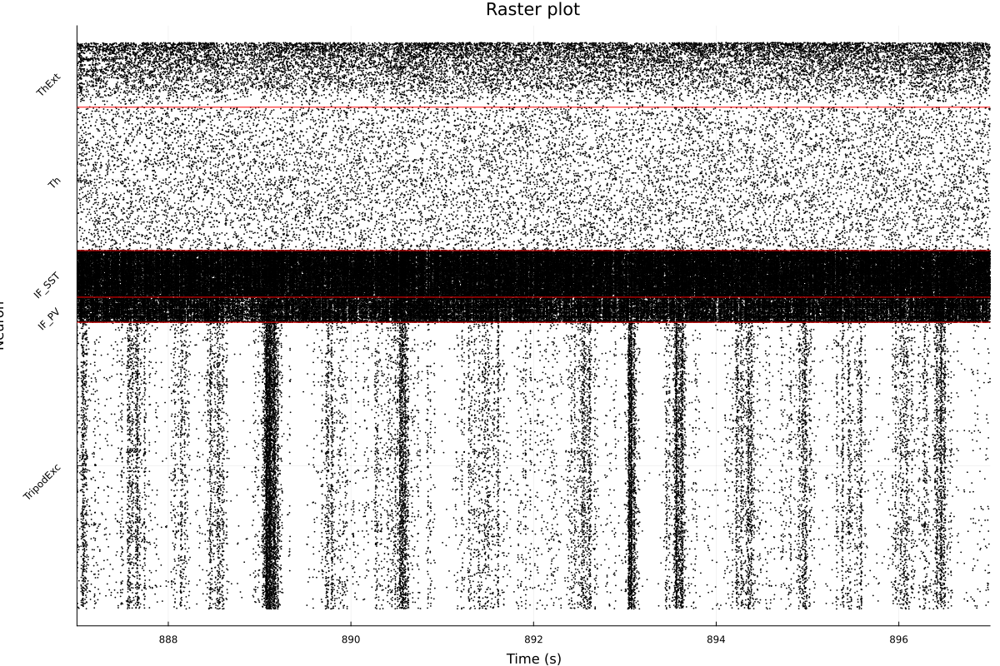

SpikingNeuralNetworks.jl Documentation
Overview
Julia Spiking Neural Networks (JuliaSNN) is a library for simulation of biophysical and abstract neuronal network models.
The library strength points are:
- Modular, intuitive, and quick instantiation of complex biophysical models;
- Large pool of standard models already available and easy implementation of custom new models;
- High performance and native multi-threading support, laptop and cluster-friendly;
- Access to all model's variables at runtime and save-load-rerun of arbitrarily complex networks;
- Growing ecosystem for stimulation protocols, network analysis, and visualization (SNNUtils, SNNPlots, SNNGeometry).
SpikingNeuralNetworks.jl is defined within the JuliaSNN ecosystem, which offers SNNPlots to plot models' recordings and SNNUtils for further stimulation protocols and analysis.
Simple and powerful
JuliaSNN builds on the idea that a neural network is composed of three classes of objects, the network populations, their recurrent connections, and the external projections they receive. Thus, a JuliaSNN model is composed of elements that are subtypes of AbstractPopulation, AbstractConnection, or AbstractStimulus. Populations are the fundamental block, a model must at least include one population.
<!– An example of a model is the classical Balanced Network by Brunel, 2000 : –>
================
[Info: Model: Balanced network
[Info: ----------------
[Info: Populations (2):
[Info: E : IF : 4000 IFParamete
[Info: I : IF : 1000 IFParamete
[Info: ----------------
[Info: Synapses (4):
[Info: E_to_E : E -> E.ge : : NoLTP : NoSTP
[Info: E_to_I : E -> I.ge : : NoLTP : NoSTP
[Info: I_to_E : I -> E.gi : : NoLTP : NoSTP
[Info: I_to_I : I -> I.gi : : NoLTP : NoSTP
[Info: ----------------
[Info: Stimuli (2):
[Info: noiseE : noiseE -> E.ge PoissonStimulus
[Info: noiseI : noiseI -> I.ge PoissonStimulus
[Info: ================For each subtype, JuliaSNN offers a library of pre-existing models. In the aforementioned case, an integrate-and-fire population (IF<:AbstractPopulation), a spiking synapse (SpikingSynapse<:AbstractSynapse) and poisson-distributed spike train (PoissonStimulus<:AbstractStimulus).
Leveraging the Julia's multiple dispatch, the simulation loop calls the methods defined for each type:
function sim!(...)
update_time!(T, dt)
for s in Stimuli
s_type = getfield(s, :param)
stimulate!(s, s_type, T, dt)
record!(s, T)
end
for p in Populations
p_type = getfield(t, :param)
integrate!(p, p_type, dt)
record!(p, T)
end
for c in Connections
c_type = getfield(c, :param)
forward!(c, c_type)
record!(c, T)
end
endPopulations are stimulated, integrated, and their information is propagated through connections. Connections and stimuli objects maintain internal pointers to the populations' fields they are attached to. This allow to seamlessy read and updates the populations fields within the stimulate! and forward! functions.
Installation
JuliaSNN is not yet available on the public Julia repository. For the moment, you can easily install the last version of the library with:
]add https://github.com/JuliaSNN/SpikingNeuralNetworks.jlModels can be easily extended by importing the AbstractPopulation, AbstractConnection, or AbstractStimulus types. Guidelines on how to create a model are presented in Models Extensions
Examples
Tutorials on how to instantiate network models are presented in Models Examples
